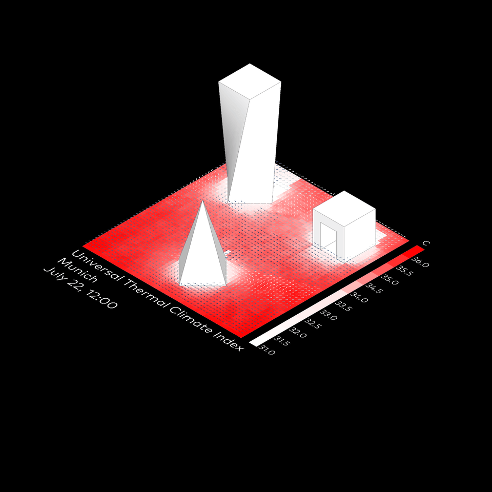
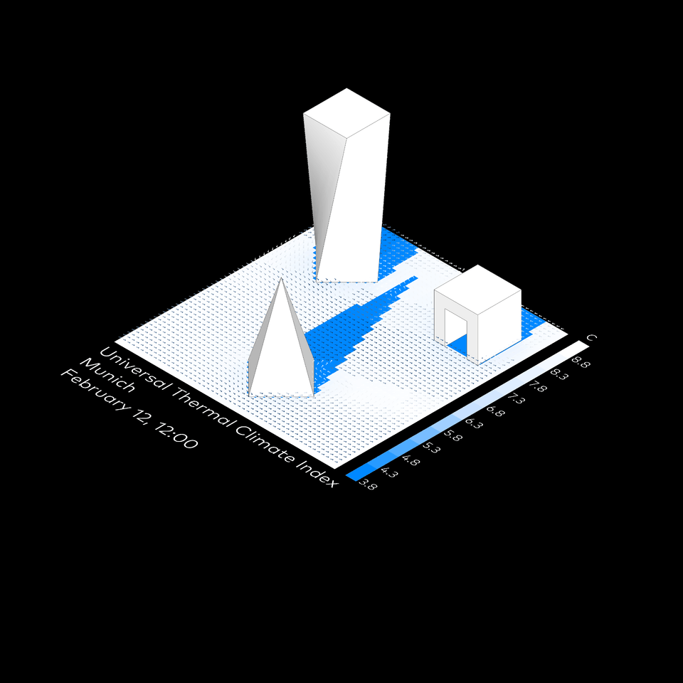

Komfort außen
Butterfly
⬤ Butterfly bildet Außenkomfort räumlich ab – koppelt CFD-Windströmungen, Strahlungstemperaturen, Materialien zu UTCI, PET, PMV. Präzise Optimierung von Außenräumen für Fußgängerkomfort und Mikroklima. Wind-kühle Plätze, hitzeresistente Zonen – stadtplanerische Qualität steigern.
⬤ Butterfly spatially maps outdoor comfort – linking CFD wind flows, radiation temperatures, materials to UTCI, PET, PMV. Precise optimization of outdoor spaces for pedestrian comfort and microclimate. Wind-cooled squares, heat-resistant zones – enhancing urban planning quality.